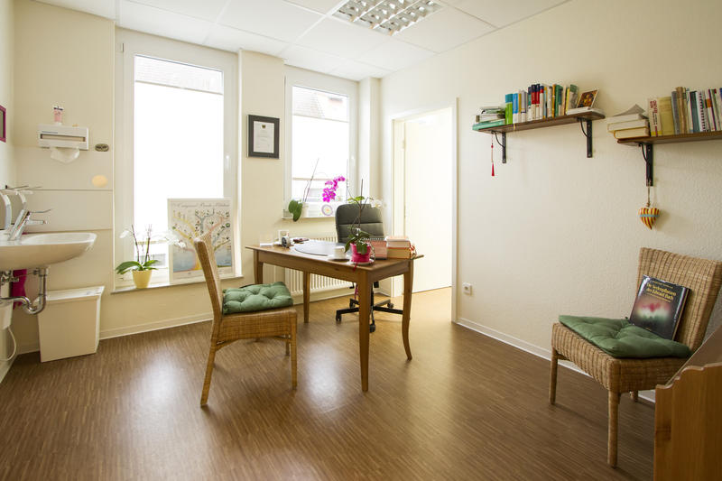
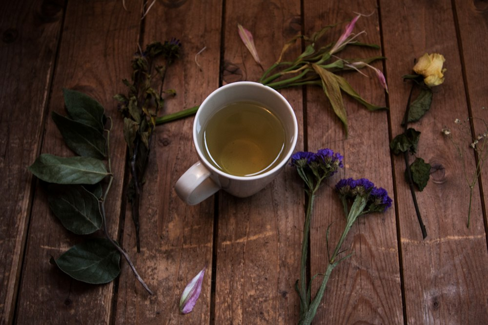
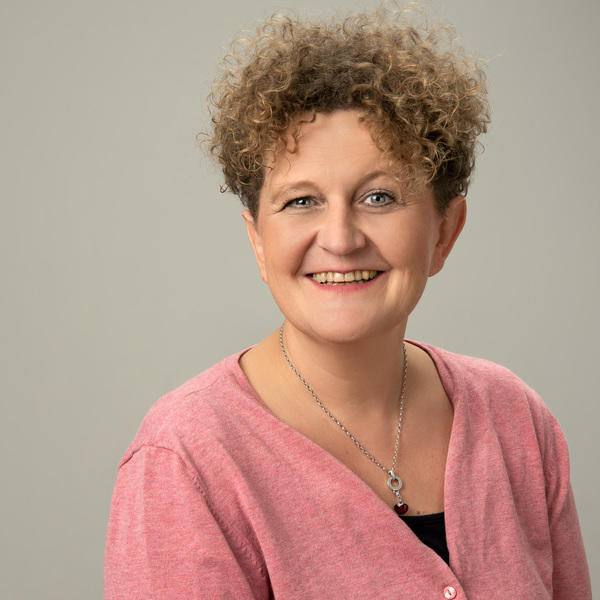
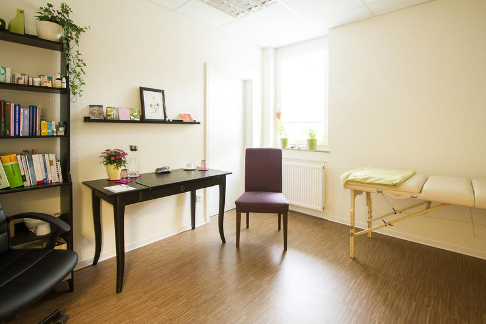
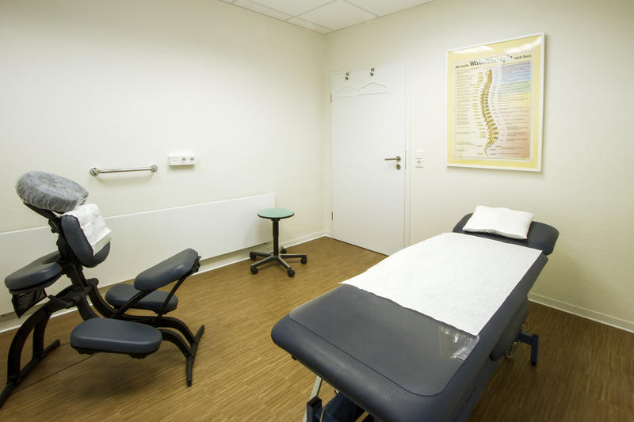

01
Homöopathie
Klassische, Lebendige und C4-Homöopathie. Grundlage ist eine ausführliche Befragung zu Beschwerden, Gemüt und Lebensumständen – für ein individuell gewähltes Mittel.
Beide TherapeutinnenMitten in Unna begleiten wir Sie ganzheitlich – mit Zeit zum Zuhören, mit Wertschätzung und mit einem Blick auf Körper, Geist und Seele.


Im Mittelpunkt unserer Arbeit steht der Mensch in seiner Individualität und Ganzheit. Wertschätzung und Empathie sind die Grundpfeiler jeder Begegnung – mit Kindern, Jugendlichen und Erwachsenen.
Am Anfang stehen eine gründliche Anamnese und gezielte Untersuchung. Darauf aufbauend erarbeiten wir die individuelle Therapierichtung.
Unser Blick gilt der körperlichen ebenso wie der geistigen, seelischen und mentalen Seite – unterstützend und ergänzend zur Schulmedizin.
Die Praxis, vormals Naturheilpraxis Wagner, besteht in Unna bereits in vierter Generation.
„Dabei ist es mir wichtig, das Erbe der Naturheilpraxis Wagner in Ehren zu halten.“
— Sabine Berkemeyer
Die „Naturheilpraxis Wagner“, heute Naturheilpraxis Berkemeyer, steht seit mehreren Jahrzehnten für kompetente und einfühlsame Begleitung.
Bereits Großvater und Vater von Dagmar Wagner waren erfahrene Heilpraktiker und etablierten die Praxis mit hervorragendem Ruf. Dagmar Wagner führte die Familientradition in dritter Generation weiter.
Sabine Berkemeyer, Heilpraktikerin seit 2008, beginnt ihre Tätigkeit in der Naturheilpraxis Wagner.
Die Praxis zieht in die Hertingerstraße 16 – in die erste Etage über der Eulen-Apotheke.
Als Nachfolgerin führt Sabine Berkemeyer die Praxis weiter – heute unter dem Namen Naturheilpraxis Berkemeyer und mit den gleichen ethischen Grundsätzen.
Beate Wink-Urbainczyk, Hebamme seit 1992, ist als Heilpraktikerin selbstständig in der Praxis tätig.
Nach einer gründlichen Anamnese und gezielten Untersuchung erarbeiten wir gemeinsam mit Ihnen die passende Therapierichtung. Diese Verfahren unterstützen uns dabei:
Klassische, Lebendige und C4-Homöopathie. Grundlage ist eine ausführliche Befragung zu Beschwerden, Gemüt und Lebensumständen – für ein individuell gewähltes Mittel.
Beide TherapeutinnenRaum für das, was Sie bewegt: Im geschützten Gespräch nehmen wir uns Zeit für die seelische und mentale Seite Ihres Anliegens.
Sabine BerkemeyerDie sanfte manuelle Methode nach Dorn für Wirbelsäule und Gelenke, verbunden mit der Breuß-Massage – einer speziellen, behutsamen Rückenmassage.
Sabine BerkemeyerNach der amerikanischen Chiropraktik: Justierung mit unterschiedlichen Techniken, unterstützt durch Ihre Atmung – mit dem Ziel von mehr Beweglichkeit und Entspannung.
Sabine BerkemeyerDie TFM ist eine besondere Massageform für Frauen – in unserer Praxis angeboten von einer Heilpraktikerin, die seit 1992 Hebamme ist.
Beate Wink-UrbainczykIndividuelle Beratung rund um Ihre Ernährung – durch eine Fachtherapeutin für ernährungsbedingte Erkrankungen und ausgebildete Fastenleiterin.
Beate Wink-UrbainczykMineralsalze nach Dr. Wilhelm Schüßler in homöopathisch aufbereiteter Form – als ein Baustein einer individuell abgestimmten naturheilkundlichen Begleitung.
Naturheilpraxis BerkemeyerEin seit Jahrhunderten angewandtes Verfahren der Naturheilkunde. Behandlungen finden meist an eigenen Blutegel-Tagen statt – Termine erfragen Sie gerne telefonisch.
Beate Wink-UrbainczykErgänzend arbeiten wir mit weiteren klassischen Naturheilverfahren. Sprechen Sie uns gerne darauf an.
Hinweis: Bei den genannten Verfahren handelt es sich um Methoden der Naturheilkunde und Erfahrungsheilkunde. Sie sind von der Schulmedizin überwiegend nicht anerkannt; wissenschaftliche Nachweise ihrer Wirksamkeit liegen größtenteils nicht vor. Wir behandeln unterstützend und ergänzend zur Schulmedizin. Die Abrechnung erfolgt nach dem Gebührenverzeichnis für Heilpraktiker (GebüH).
Unterschiedliche Wege in die Naturheilkunde, unterschiedliche Schwerpunkte – und dieselbe Haltung: Wir freuen uns, Sie ganzheitlich orientiert begleiten zu dürfen.

Beide Therapeutinnen sind Mitglied im Bund Deutscher Heilpraktiker (BDH) e. V.
„Wir freuen uns, wenn Sie den Weg zu uns finden.“Sabine Berkemeyer & Beate Wink-Urbainczyk
Seit 2013 finden Sie uns in der Hertingerstraße 16, in der ersten Etage über der Eulen-Apotheke. Das Haus verfügt über einen Aufzug – unsere Praxis ist barrierefrei erreichbar.


Unsere Praxis liegt in der Innenstadt von Unna.
| Montag | 9:00 – 18:00 Uhr |
|---|---|
| Dienstag | 8:00 – 12:00 Uhr 14:00 – 18:00 Uhr |
| Mittwoch | 8:00 – 12:00 Uhr |
| Donnerstag | 8:00 – 12:00 Uhr 14:00 – 18:00 Uhr |
| Freitag | 8:00 – 12:00 Uhr |
Rufen Sie uns gerne an oder schreiben Sie uns eine E-Mail.